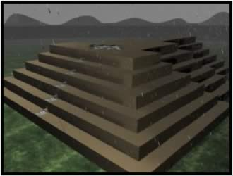

|
This is Tiwanaku's main shrine, called Akapana, which became a fountain
during the rainy season. |
||||
|
Find out how Akapana was constructed Find out about Akapana as a religious building Find out how Akapana became a fountain during the rainy season |
 | |||